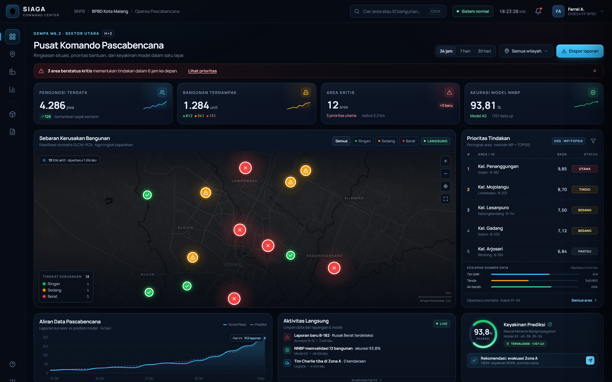
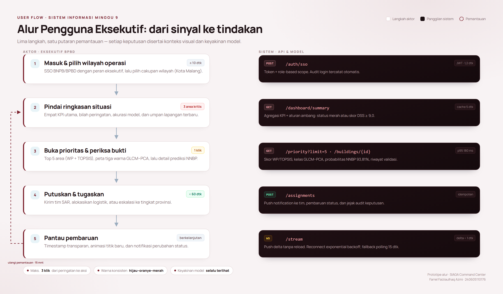
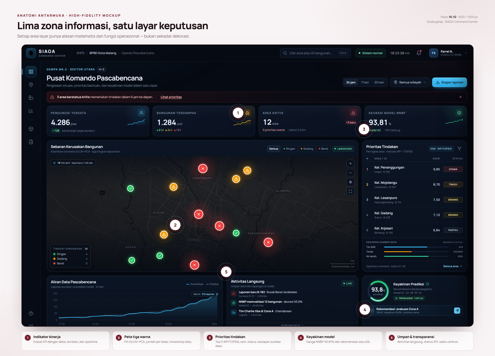
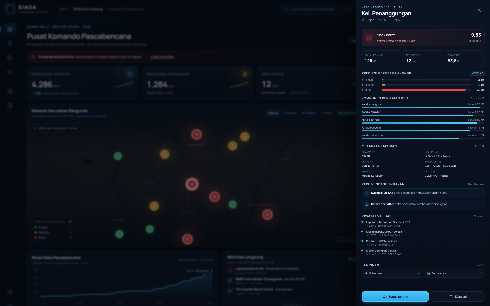
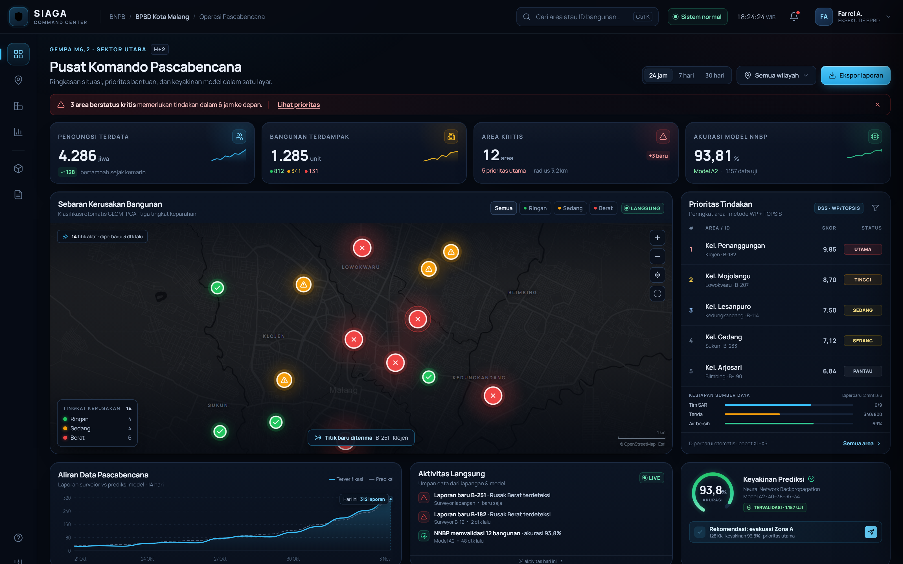
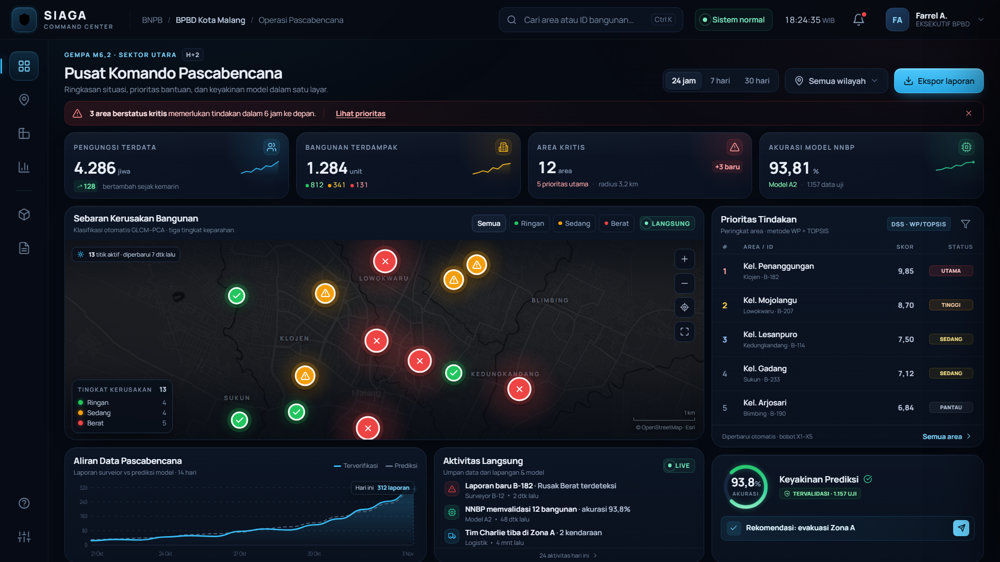

Merancang antarmuka eksekutif yang mengubah data lapangan, klasifikasi kerusakan, dan probabilitas model menjadi keputusan bantuan yang cepat dan terukur.

Tugas Minggu 9 meminta rancangan wireframe/mockup high-fidelity untuk dashboard eksekutif BNPB/BPBD. Saya tidak berhenti pada gambar statis: rancangan diwujudkan sebagai purwarupa web interaktif bernama SIAGA Command Center, sehingga hierarki, mode gelap, dan perilaku data langsung bisa diuji di browser pada ukuran layar sebenarnya.
Ada tiga hal yang harus terlihat tanpa perlu membuka menu apa pun. Pertama, peta dengan tiga warna kerusakan sebagai keluaran GLCM–PCA. Kedua, daftar prioritas tindakan sebagai keluaran DSS berbasis WP dan TOPSIS. Ketiga, metrik langsung serta probabilitas prediksi NNBP sebesar 93,81% yang memberi keyakinan pada keputusan. Ketiganya ditempatkan dalam satu layar, dengan satu panel detail untuk saat eksekutif butuh menelusuri bukti.
Laporan ini mengikuti urutan keputusan perancang: siapa yang dilayani, bagaimana ia bergerak, mengapa elemen disusun demikian, lalu bagaimana data mengalir ke layar. Bagian 5 sampai 8 adalah inti teknis; bagian 2 dan 4 menjelaskan alasan di balik tampilan.
Pascabencana bukan hanya soal reruntuhan. Ada gunungan data yang harus dibaca sambil jam terus berjalan: lembar survei, foto bangunan, catatan surveyor, laporan BMKG, dan permintaan bantuan dari lapangan. Materi Minggu 9 menyebutnya sebagai kekacauan data lapangan — masif, terfragmentasi, dan sering subjektif.
Pada minggu-minggu sebelumnya, rantai pengolahannya sudah dibangun: GLCM–PCA mengubah tekstur kerusakan menjadi tiga kelas, NNBP memprediksi tingkat kerusakan dengan akurasi 93,81%, dan DSS dengan Weighted Product serta TOPSIS memberi peringkat area. Namun keluaran itu masih berupa angka dan label. Tugas saya adalah merancang lapisan terakhir: antarmuka yang membuat seorang kepala BPBD bisa memahami situasi dan memutuskan tindakan dalam hitungan detik, tanpa membaca tabel mentah.
Purwarupa ini adalah mockup high-fidelity interaktif, bukan sistem produksi. Semua data berasal dari berkas simulasi dan tidak terhubung ke basis data BPBD. Peta menggunakan basemap gelap Esri/OpenStreetMap dengan atribusi; koordinat kelurahan disusun untuk skenario, bukan hasil survei aktual. Model tidak dijalankan ulang — probabilitas dan skor merepresentasikan keluaran yang dijelaskan di materi.
Saya memilih membangun mockup sebagai HTML, CSS, dan JavaScript, bukan sebagai kanvas Figma. Alasannya praktis: saya ingin menguji tipografi, jarak, kontras, dan animasi pada browser sungguhan, lalu memastikan hasilnya tidak berubah saat dibuka di layar 1600×1000. Seluruh token warna, skala tipe, dan grid 12 kolom tetap terdokumentasi di Bagian 6 sehingga rancangan dapat dipindahkan ke Figma atau Adobe XD bila diperlukan versi statis.
Dashboard eksekutif bukan berarti hanya untuk satu orang. Di baliknya ada operator yang menjaga data tetap masuk dan surveyor yang mengambil foto di lapangan. Saya memetakan ketiganya agar keputusan desain tidak hanya melayani demo, tetapi alur kerja nyata di pusat kendali.
| Peran | Yang dicari | Konteks | Risiko bila gagal |
|---|---|---|---|
| Kepala BPBD / eksekutif | “Di mana yang paling parah, dan apa yang harus saya kirim sekarang?” | Ruang kendali, layar besar, sering ditekan waktu | Salah prioritas; bantuan datang terlambat |
| Operator Pusdalops | Memastikan data masuk, valid, dan tidak ada area yang terlewat | Meja operasional, multi-layar, shift panjang | Data basi dianggap terkini |
| Surveyor lapangan | Mengirim laporan cepat dengan bukti foto dan lokasi | Mobile, sinyal terbatas, tangan sibuk | Laporan tidak terkirim atau salah koordinat |
| Kebutuhan | Respons dalam rancangan |
|---|---|
| Mengetahui situasi dalam < 10 detik | Empat KPI di kiri atas, alert kritis di bawah header, dan peta langsung terlihat tanpa scroll. |
| Memercayai angka model | Akurasi NNBP ditampilkan sebagai KPI dan badge; setiap rekomendasi membawa persentase keyakinan. |
| Menghubungkan angka dengan lokasi | Pin peta, baris prioritas, dan panel detail saling terhubung dalam satu state. |
| Bertindak, bukan sekadar melihat | Tombol “Tugaskan tim” dan “Eskalasi” berada di akhir alur bukti, bukan tersembunyi di menu. |
| Mengetahui kesegaran data | Label “diperbarui x dtk lalu”, jam sinkron, status WebSocket, dan toast saat titik baru masuk. |
| Bekerja malam hari tanpa silau | Mode gelap berlapis, aksen sian, dan warna status yang tetap terbaca di lingkungan redup. |
Satu layar, satu pertanyaan utama. Detail dipindahkan ke panel geser agar tidak membanjiri pandangan.
Angka terpenting di kiri atas, peringatan di kanan atas, konteks spasial di tengah, aksi di kanan.
Setiap widget berujung pada langkah berikutnya: lihat area, tugaskan tim, atau eskalasi.
Alur dirancang untuk dua mode yang berbeda: mode keputusan saat ada peringatan kritis, dan mode pemantauan saat situasi relatif terkendali. Keduanya memakai layar yang sama; yang berubah adalah seberapa dalam pengguna masuk ke bukti.

| # | Langkah | Yang dilakukan pengguna | Sistem / API |
|---|---|---|---|
| 1 | Masuk & pilih wilayah | Login SSO, memilih cakupan kota atau kecamatan. | POST /auth/sso · JWT + scope |
| 2 | Pindai ringkasan | Membaca empat KPI, bilah peringatan, dan akurasi model. | GET /dashboard/summary |
| 3 | Buka prioritas & bukti | Memilih area, melihat peta tiga warna dan detail prediksi. | GET /priority · /buildings/{id} |
| 4 | Putuskan & tugaskan | Mengirim tim, mengalokasikan logistik, atau eskalasi. | POST /assignments · audit |
| 5 | Pantau pembaruan | Menunggu delta berikutnya; kembali ke ringkasan bila perlu. | WS /stream · fallback polling |
Putaran pemantauan kembali ke langkah 2 setiap 15 menit atau setelah WebSocket mengirim delta. Filter dan posisi pengguna tetap terjaga — penting untuk shift panjang di pusat kendali, agar setiap pembaruan tidak memaksa orang memulai dari awal.
Saya membagi layar menjadi lima zona yang mengikuti kebiasaan mata membaca dari kiri atas ke kanan bawah. Zona paling besar diberikan kepada peta karena pertanyaan “di mana” selalu muncul sebelum “apa tindakannya”.

Empat KPI: pengungsi, bangunan terdampak, area kritis, dan akurasi model. Angka besar, satuan kecil, delta di bawah. Ini menjawab pertanyaan pertama tanpa perlu membaca grafik.
Peta menempati sekitar dua pertiga lebar konten. Tiga warna, ukuran pin berbeda, dan jumlah per kelas di legenda. Timestamp menempel pada peta agar kesegaran data tidak terpisah dari konteksnya.
Daftar prioritas dan kartu keyakinan model. Di sini angka berubah menjadi tindakan: skor, status, rekomendasi, dan tombol penugasan.
Konten memakai grid 12 kolom dengan gutter 24 px pada kanvas 1600 px. Rel navigasi 66 px, kolom kiri fleksibel, panel kanan 372 px agar tabel prioritas tidak “melompat” saat angka berubah. Jarak mengikuti kelipatan 4 px; kartu memakai radius 16 px dan garis 1 px.
Tampilan utama menjawab tiga pertanyaan eksekutif secara berurutan: apa yang terjadi (KPI dan alert), di mana (peta tiga warna), dan apa yang harus dilakukan (prioritas serta rekomendasi). Semua berada di atas lipatan layar 1600×1000 tanpa scroll.
Peta sengaja tidak diberi heatmap penuh. Titik dengan halo tipis sudah cukup menunjukkan konsentrasi, sementara pin tetap bisa diklik satu per satu. Tabel prioritas ditempatkan di kanan agar sejajar dengan peta: mata dapat berpindah dari lokasi ke skor tanpa memutar arah baca. Warna aksen sian dipakai untuk interaksi, bukan status, sehingga tidak bersaing dengan merah-oranye-hijau.
Eksekutif tidak selalu perlu detail. Tetapi ketika keputusan menyangkut pengiriman tim dan anggaran, ia harus bisa memeriksa dasar penilaian tanpa kehilangan konteks layar. Panel geser menyediakan jalur itu: satu klik pada pin atau baris prioritas membuka bukti, sementara peta tetap terlihat di belakang.

1. Status dan skor — “Rusak Berat · 9,85” langsung terlihat. 2. Dampak — 128 KK, 12 unit, keyakinan 93,8%. 3. Prediksi — tiga probabilitas (2,1% / 4,1% / 93,8%) agar model tidak tampak seperti kotak hitam. 4. Komponen DSS — lima kriteria dengan bobot X1–X5. 5. Metadata — surveyor, waktu, sumber, metode validasi. 6. Riwayat — perjalanan data dari laporan sampai peringkat. 7. Aksi — tugaskan tim atau eskalasi.
Angka 93,81% pada kartu utama adalah akurasi agregat. Di panel detail, pengguna melihat distribusi per bangunan: 93,8% berat, bukan 100%. Ini mengurangi risiko overpercaya pada model dan memberi ruang bagi penilaian manusia. Klasifikasi tetap dapat dieskalasi bila ada keraguan.
Data pascabencana tidak berhenti saat dashboard dibuka. Purwarupa menyimulasikan laporan masuk setiap beberapa detik: pin baru muncul dengan denyut halus, KPI bertambah, umpan aktivitas diperbarui, dan timestamp kembali ke “baru saja”. Tidak ada muat ulang halaman.

Pada 1366×768, tinggi KPI, peta, dan panel kanan dikurangi, blok kesiapan sumber daya disembunyikan, dan status bar dihilangkan. Informasi inti tetap ada: KPI, peta, lima prioritas, dan keyakinan model. Di bawah 1180 px, panel kanan turun ke bawah peta; di bawah 820 px, rel navigasi menghilang dan kontrol atas menumpuk.

Mode gelap sering gagal karena semua permukaan dibuat hitam dan semua teks dibuat putih. Saya memakai tiga tingkat permukaan, garis tipis, dan aksen sian untuk interaksi. Warna status tetap jenuh supaya terbaca dari jarak dua meter, tetapi latarnya diredam agar tidak menyilaukan.
| Token | Nilai | Arti |
|---|---|---|
| Ringan | #22C55E | n < 0 · tidak mendesak |
| Sedang | #F59E0B | 0 ≤ n < 2 · perlu asesmen |
| Berat | #EF4444 | n ≥ 2 · prioritas utama |
| Muted | #8497B2 | Teks sekunder |
| Dim | #7286A0 | Label & metadata |
Merah dipakai untuk isian pin, ikon, dan angka besar. Untuk teks kecil, saya memakai versi lebih terang (#FCA5A5) agar tetap melewati ambang kontras. Ukuran pin juga berbeda — berat 28 px, sedang 24 px, ringan 20 px — sehingga kelas masih terbaca tanpa warna.
Pusat komando sering aktif malam hari. Latar gelap mengurangi silau dan menjaga adaptasi mata terhadap monitor lain di ruangan.
Permukaan gelap membuat pin berwarna dan angka putih menonjol. Warna status tidak bersaing dengan latar terang.
Aksen sian dipakai untuk navigasi dan fokus; merah-oranye-hijau khusus status. Tidak ada warna yang punya dua makna.
Prinsip actionability dari materi Minggu 9 saya terjemahkan secara literal: tidak ada informasi yang berhenti pada dirinya sendiri. Angka menunjukkan lokasi, lokasi membuka bukti, bukti berujung pada tombol yang jelas, dan tombol meninggalkan jejak.
Pada panel detail, “Tugaskan tim” adalah tombol primer; “Eskalasi” sekunder. Tidak ada dua tombol yang bersaing dengan bobot sama.
Toast menyebut objek dan tujuan: “Rekomendasi evakuasi Zona A dikirim ke tim lapangan”, bukan “Berhasil”.
Setiap penugasan menulis waktu, aktor, area, dan rekomendasi ke log — terlihat pada riwayat validasi di panel.
| Kondisi | Yang ditampilkan | Alasan |
|---|---|---|
| Memuat awal | Skeleton pada kartu KPI dan peta; teks “Menghubungkan ke pusat data…”. | Menjaga tata letak agar tidak melompat saat data tiba. |
| Belum ada laporan | Peta kosong dengan pesan “Belum ada laporan terverifikasi” dan tombol “Muat ulang”. | Kosong bukan berarti aman; pesan harus eksplisit. |
| Gagal API | Kartu bertanda “Data tertunda”, tombol coba lagi, dan status kuning di bilah atas. | Jangan menampilkan angka lama seolah-olah baru. |
| Data basi (> 60 dtk) | Timestamp berubah kuning dan berbunyi “Terakhir diperbarui 2 mnt lalu”. | Transparansi waktu adalah bagian dari kepercayaan. |
| Koneksi putus | Bilah “Mode luring · data terakhir 14:28 WIB”; WebSocket mencoba ulang. | Petugas tetap bisa membaca situasi terakhir. |
| Tidak berwenang | Tombol penugasan nonaktif dengan penjelasan peran yang dibutuhkan. | Mencegah aksi yang tidak sah, bukan sekadar menyembunyikan tombol. |
Durasi transisi 180–300 ms dengan kurva ease-out. Denyut hanya diberikan pada pin baru dan indikator “langsung”; elemen lain diam. Panel detail masuk dari kanan agar arahnya konsisten dengan metafora “menarik lembar bukti”. Semua animasi dinonaktifkan saat pengguna mengaktifkan prefers-reduced-motion.
Pada peta, hover menampilkan tooltip berisi nama area, status, dan skor. Klik memilih pin dan menyorot baris tabel yang sesuai; keduanya berbagi state yang sama. Ini mengurangi beban mengingat: pengguna tidak perlu mencari ulang area di tabel setelah melihat peta.
Kalimat-kalimat itu pendek, menyebut angka, dan tidak memakai istilah teknis yang tidak perlu. Eksekutif tidak perlu tahu nama tabel atau endpoint; operator tetap bisa menemukannya di status bar dan dokumentasi.
Materi Minggu 9 menekankan API RESTful sebagai jembatan antara aplikasi surveyor dan dashboard, serta WebSocket/AJAX agar layar diperbarui tanpa page reload. Rancangan ini mengikuti pola tersebut: frontend tidak mengetahui cara menghitung GLCM atau TOPSIS; ia hanya meminta ringkasan, daftar prioritas, dan detail bangunan.
| Endpoint | Kegunaan |
|---|---|
| GET /dashboard/summary | KPI, alert, status model |
| GET /priority?limit=5 | Peringkat WP + TOPSIS |
| GET /buildings/{id} | Detail, komponen, riwayat |
| POST /assignments | Penugasan tim & audit |
| WS /stream | Delta laporan & status |
Frontend menyimpan ringkasan di cache dan hanya mengganti bagian yang berubah saat delta tiba. Bila WebSocket terputus, ia beralih ke polling 15 detik dan menandai data sebagai “tertunda”. Penugasan memakai idempotency key agar klik ganda tidak mengirim dua tim. Otorisasi berbasis peran: surveyor hanya menulis laporan, operator memvalidasi, eksekutif menugaskan; semua tindakan masuk audit log.
| Interaksi | Target |
|---|---|
| Ringkasan pertama tampil | < 2 detik · cache 5 dtk |
| Detail bangunan (p95) | 180 ms |
| Delta WebSocket ke layar | < 1 detik |
| Konfirmasi penugasan | < 800 ms |
Saya mengecek hasil terhadap tiga syarat komponen inti dan empat fokus penilaian pada slide tugas. Kolom bukti menunjuk ke bagian laporan atau berkas agar klaim dapat diverifikasi, bukan sekadar dinyatakan.
| Ketentuan tugas | Bukti pada rancangan | Status |
|---|---|---|
| Peta dengan aturan tiga warna (GLCM–PCA) | Pin hijau/oranye/merah, legenda berjumlah, ikon berbeda, ukuran berbeda; halaman 7 dan 8. | Terpenuhi |
| Tabel prioritas evakuasi/bantuan (DSS) | Top 5 area, skor WP/TOPSIS, status Utama/Tinggi/Sedang/Pantau, kesiapan sumber daya. | Terpenuhi |
| Metrik real-time & probabilitas NNBP 93,81% | KPI langsung, timestamp, umpan aktivitas, gauge keyakinan, probabilitas per kelas di panel detail. | Terpenuhi |
| Alur pengguna | Diagram lima langkah + putaran pemantauan; aturan tiga klik; pemisahan mode keputusan/pemantauan. | Terpenuhi |
| Hierarki visual | Zona 1–5, F-pattern, KPI kiri atas, peta dominan, aksi di kanan; grid 12 kolom. | Terpenuhi |
| Kesesuaian mode gelap | Tiga tingkat permukaan, kontras terukur, warna status konsisten, tanpa hitam-putih ekstrem. | Terpenuhi |
| Prinsip integrasi data backend | Endpoint, payload JSON, WebSocket + fallback, status data, audit, idempotensi. | Terpenuhi |
| Visibilitas status | Selalu ada timestamp, status API, dan label “langsung”. |
| Kesesuaian dunia nyata | Istilah BPBD, WP/TOPSIS, GLCM–PCA, NNBP dipakai konsisten. |
| Kontrol & kebebasan | Filter, jeda umpan, tutup panel, Esc, dan Ctrl+K. |
| Konsistensi | Satu arti untuk satu warna; satu pola tombol. |
| Pencegahan error | Konfirmasi penugasan, idempotensi, tombol nonaktif sesuai peran. |
Langkah berikutnya: uji guerilla dengan 3–5 pejabat BPBD, ukur waktu menemukan area terparah dan mengirim penugasan; lalu lanjutkan ke prototipe React dengan API nyata dan audit aksesibilitas.
Rancangan ini menjawab tugas bukan dengan menumpuk grafik, tetapi dengan menyusun urutan keputusan. Peta tiga warna memberi lokasi, tabel prioritas memberi urutan, dan badge keyakinan memberi izin untuk bertindak. Mode gelap, hierarki F-pattern, serta perilaku real-time menjaga ketiganya tetap terbaca di ruang kendali yang sibuk. Yang masih perlu dilengkapi adalah validasi lapangan: desain yang baik harus berani diuji oleh orang yang akan memakainya di hari terburuk.
Buka mockup/index.html di Chrome atau Edge. Tidak perlu server; seluruh aset lokal. Gunakan ?static=1 untuk membekukan simulasi saat presentasi, ?detail=B-182 untuk langsung membuka panel contoh, dan Ctrl+K untuk fokus ke pencarian. Tombol “Langsung” menjeda atau melanjutkan umpan data.
1. Materi Kuliah Sistem Informasi Minggu 9 — UI/UX Dashboard & Visualisasi Real-Time DSS, Program Studi Teknik Informatika, UIN Maulana Malik Ibrahim Malang, 2026.
2. Video pembelajaran “Pemodelan Cerdas Pascabencana”, 3 November 2026.
3. W3C, Web Content Accessibility Guidelines (WCAG) 2.1, 2018 — kriteria kontras 1.4.3 dan 1.4.11.
4. Nielsen, J., 10 Usability Heuristics for User Interface Design, Nielsen Norman Group.
5. OpenStreetMap Foundation & Esri, basemap Dark Gray Canvas (atribusi pada peta).
Seluruh berkas mockup, screenshot, diagram, dan laporan disimpan pada repositori GitHub publik. Tautan ini menjadi salinan kerja yang dapat diperiksa, di-clone, dan dijalankan ulang tanpa perlu mengirim folder manual.
SIAGA Command Center — purwarupa dashboard eksekutif pascabencana. Berisi kode mockup, data simulasi, screenshot, laporan PDF, dan sumber diagram.
Tidak ada proses build, dependensi, atau server. Semua aset (font dan basemap) sudah tersimpan di dalam repositori sehingga mockup tetap berjalan luring.
| Folder | Isi | Dibuka dengan |
|---|---|---|
| mockup/ | index.html, CSS, JavaScript, data simulasi, font, basemap | Browser |
| laporan/ | PDF 15 halaman, sumber HTML, dan diagram | PDF viewer |
| screenshots/ | Enam tangkapan layar resolusi 2× | Image viewer |